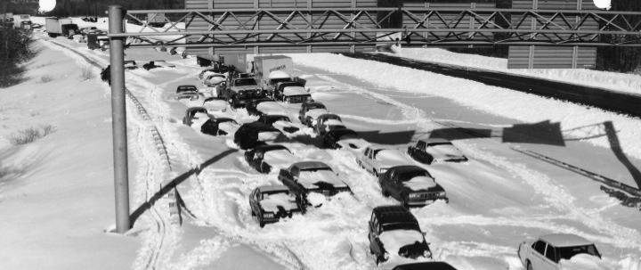

Biggest snowstorm in 2016 thus far bearing down on Southeast Idaho
A wind advisory calling for gusts of up to 50 mph in East Idaho was also in effect.
After earlier forecasting rain for East Idaho for Sunday Octuber 6, the weather service began issuing special weather alerts around 9:40 p.m. Sunday calling for 4 to 8 inches of mountain snow Sunday night through Monday morning in Southeast Idaho. Around 11:20 p.m. Sunday the weather service issued the winter weather advisory calling for even more snow Sunday night and Monday morning in Southeast Idaho.
The Sunday night-Monday morning storm is the first of multiple storms forecast to pass through the region through Wednesday.
Lower elevation areas throughout Southeast Idaho — including Pocatello, Blackfoot, American Falls, Aberdeen, Fort Hall, Burley, Rupert, Malad, McCammon, Downey and Preston — saw a rain-snow mix Sunday night through Monday morning.
The rest of East Idaho likely received rain and/or light snow from the storm.

Weathers Watch
 13 West Oneida
13 West Oneida
Preston, ID 83263
 (208)852-1817
(208)852-1817
 info@weathers.watch
info@weathers.watch